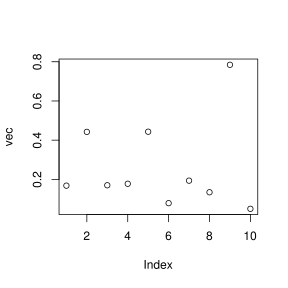
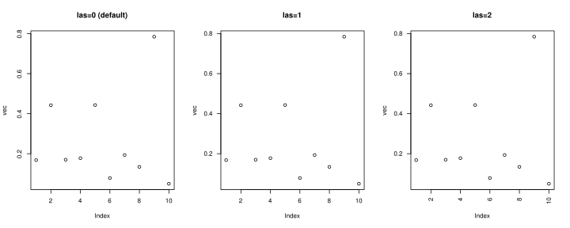

drop argument of the [] operatorThis is something not obvious and poorly known but there is a logical argument
drop that can be passed to the [] operator and I’ll try to explain why it could be useful! Let’s first create a dataframe with ten rows and three columns:
df <- data.frame(
var1 = runif(10),
var2 = runif(10),
var3 = runif(10)
)
head(df)
#R> var1 var2 var3
#R> 1 0.341753046 0.19376930 0.17547578
#R> 2 0.004977991 0.74399069 0.00817248
#R> 3 0.786483104 0.04411304 0.25532572
#R> 4 0.154368319 0.42376257 0.15102825
#R> 5 0.643438892 0.08479976 0.63432851
#R> 6 0.417359550 0.85412243 0.81577224To extract the first column, I use the [] operator and either type the number of the column like so:
df[, 1]
#R> [1] 0.341753046 0.004977991 0.786483104 0.154368319 0.643438892
#R> [6] 0.417359550 0.309380911 0.197745867 0.489917742 0.106949640or the name of the column to be extracted:
df[, 'var1']
#R> [1] 0.341753046 0.004977991 0.786483104 0.154368319 0.643438892
#R> [6] 0.417359550 0.309380911 0.197745867 0.489917742 0.106949640Interestingly enough, this returns a vector not a data.frame
class(df)
#R> [1] "data.frame"
class(df[, 'var1'])
#R> [1] "numeric"while if I extract two columns, I have a data frame:
class(df[, c('var1', 'var2')])
#R> [1] "data.frame"This behavior is actually very useful in many cases as we often are happy to deal with a vector when we extract only one column. However this might become an issue when we do extractions without knowing the number of columns to be extracted beforehand (typically when extracting according to a request that can give any number of columns). In such case if the number is one then we end up with a vector instead of a data.frame. The argument drop provides a work around. By default it is set to TRUE and a 1-column dataframe becomes a vector, but using drop=FALSE prevents this from happening. Let’s try this:
df[, 1, drop=FALSE]
#R> var1
#R> 1 0.341753046
#R> 2 0.004977991
#R> 3 0.786483104
#R> 4 0.154368319
#R> 5 0.643438892
#R> 6 0.417359550
#R> 7 0.309380911
#R> 8 0.197745867
#R> 9 0.489917742
#R> 10 0.106949640Let’s check its class:
class(df[, 1, drop=FALSE])
#R> [1] "data.frame"You can actually obtain the same result using the name of the column or its number without comma.
df[1]
#R> var1
#R> 1 0.341753046
#R> 2 0.004977991
#R> 3 0.786483104
#R> 4 0.154368319
#R> 5 0.643438892
#R> 6 0.417359550
#R> 7 0.309380911
#R> 8 0.197745867
#R> 9 0.489917742
#R> 10 0.106949640But if you need a specific selection of rows, you better use drop!
df[2:5, 1, drop=F]
#R> var1
#R> 2 0.004977991
#R> 3 0.786483104
#R> 4 0.154368319
#R> 5 0.643438892Now you know ;-)
Many researchers (it is especially TRUE in ecology) uses R and write paper and carry out analyses using R for their research. One cones the time of citing the package I guess they wonder how to cite the package. However authors of package actually provides this information in their package! Let’s have a look of the reference for the package knitr as of version 1.17 using function citation
citation("knitr")
#R>
#R> To cite the 'knitr' package in publications use:
#R>
#R> Yihui Xie (2018). knitr: A General-Purpose Package for Dynamic
#R> Report Generation in R. R package version 1.20.
#R>
#R> Yihui Xie (2015) Dynamic Documents with R and knitr. 2nd
#R> edition. Chapman and Hall/CRC. ISBN 978-1498716963
#R>
#R> Yihui Xie (2014) knitr: A Comprehensive Tool for Reproducible
#R> Research in R. In Victoria Stodden, Friedrich Leisch and Roger
#R> D. Peng, editors, Implementing Reproducible Computational
#R> Research. Chapman and Hall/CRC. ISBN 978-1466561595
#R>
#R> To see these entries in BibTeX format, use 'print(<citation>,
#R> bibtex=TRUE)', 'toBibtex(.)', or set
#R> 'options(citation.bibtex.max=999)'.As suggested in the message, we can even retrieve a reference list in bibtex format with the toBibtex function, let’s do this:
toBibtex(citation("knitr"))
#R> @Manual{,
#R> title = {knitr: A General-Purpose Package for Dynamic Report Generation in R},
#R> author = {Yihui Xie},
#R> year = {2018},
#R> note = {R package version 1.20},
#R> url = {https://yihui.name/knitr/},
#R> }
#R>
#R> @Book{,
#R> title = {Dynamic Documents with {R} and knitr},
#R> author = {Yihui Xie},
#R> publisher = {Chapman and Hall/CRC},
#R> address = {Boca Raton, Florida},
#R> year = {2015},
#R> edition = {2nd},
#R> note = {ISBN 978-1498716963},
#R> url = {https://yihui.name/knitr/},
#R> }
#R>
#R> @InCollection{,
#R> booktitle = {Implementing Reproducible Computational Research},
#R> editor = {Victoria Stodden and Friedrich Leisch and Roger D. Peng},
#R> title = {knitr: A Comprehensive Tool for Reproducible Research in {R}},
#R> author = {Yihui Xie},
#R> publisher = {Chapman and Hall/CRC},
#R> year = {2014},
#R> note = {ISBN 978-1466561595},
#R> url = {http://www.crcpress.com/product/isbn/9781466561595},
#R> }Even if you are no a Latex user, this could be very helpful as this file can be read by references manager softwares such as Zotero. So now let’s say I use the following command line:
cat(toBibtex(citation("knitr")), file='biblio.bib', sep='\n')Then the biblio.bib file just created can be imported in you favorite references manager softwares.
In R, functions are stored in packages and adding a package is like adding a collection of functions. As you get more experienced with R you likely know and use more and more packages. You might even come to the point where you have functions that have the same name but originate from different package. If not, let me show you something:
library(magrittr)
df <- data.frame(
var1 = runif(10),
var2 = runif(10)
)
extract(df, 'var1')
#R> var1
#R> 1 0.08330175
#R> 2 0.29947569
#R> 3 0.70223159
#R> 4 0.60169554
#R> 5 0.42663621
#R> 6 0.50445171
#R> 7 0.48997816
#R> 8 0.37894227
#R> 9 0.07750957
#R> 10 0.48003491Here I use the function extract() from the magrittr package that act as [] and I extract the column var1 from df. This function is actually designed to be use with pipes (if this sounds weird, have a look at the magrittr package), for instance when piping you can write df %$% extract(var1) or even df %>% '['('var1') and this will do the same. So far, so good. Now I load the raster package:
library(raster)
#R> Loading required package: sp
#R>
#R> Attaching package: 'raster'
#R> The following object is masked from 'package:magrittr':
#R>
#R> extractand try the same extraction.
extract(df, 'var1')
#R> Error in (function (classes, fdef, mtable) : unable to find an inherited method for function 'extract' for signature '"data.frame", "character"'It does not work…Why?? Briefly, extract() from raster is now called (this was the warning message on load said) and it does not get well with data.frame (this is the meaning of the error message). To overcome this you can use a explicit namespace. To do so you put the names of the package followed by ::, this is basically the unique identifier of the function. Indeed, within a specific package, functions have different names and on CRAN packages must have different names, so the combination of the two is unique (this holds true if you only package from the CRAN). Let’s use it:
magrittr::extract(df, 'var1')
#R> var1
#R> 1 0.08330175
#R> 2 0.29947569
#R> 3 0.70223159
#R> 4 0.60169554
#R> 5 0.42663621
#R> 6 0.50445171
#R> 7 0.48997816
#R> 8 0.37894227
#R> 9 0.07750957
#R> 10 0.48003491Using this is also very helpful when you develop a package and functions from different packages. Even if you script and use a large number of function from various packages, it could be better to remember from which package functions come from. Finally, note that this is not R specific at all, actually this something very common in programming languages.
Packages often contain functions that are not exported. There are often functions called by the functions exported thats helps structuring the code of the package. However, it happens that when you try to understand how a package work you may want to spend some time understanding how they do work (especially given that they are nit documented). There is actually a way to call them! Instead of using tow colons (:), use three! Let’s have a look to the code of one of this function from the knitr package (again version 1.17):
knitr:::.color.blockInteresting, isn’t it! To give you an idea about how frequent this can be, in this packages there are 103 exported functions and 425 not-exported. Below are presented few examples of exported functions followed by not-exported ones.
##------------------------ Exported functions
## knitr::pat_rnw knitr::fig_path knitr::all_patterns
## knitr::fig_chunk knitr::clean_cache knitr::kable
## knitr::knit_params_yaml knitr::raw_output knitr::render_sweave
## knitr::stitch_rhtml knitr::include_graphics knitr::Sweave2knitr
## knitr::hook_plot_asciidoc knitr::hook_optipng knitr::hook_plot_tex
## knitr::knit_print knitr::knit_watch knitr::knit2html
## knitr::render_html knitr::knit2wp knitr::rocco
## knitr::opts_template knitr::normal_print knitr::include_url
## knitr::combine_words knitr::render_listings knitr::current_input
##------------------------ (27/103 displayed)
##------------------------
##------------------------ Not-exported functions
## knitr:::.__NAMESPACE__. knitr:::knit_expand
## knitr:::.__S3MethodsTable__. knitr:::knit_filter
## knitr:::.base.pkgs knitr:::knit_global
## knitr:::.chunk.hook.html knitr:::knit_handlers
## knitr:::.chunk.hook.tex knitr:::knit_hooks
## knitr:::.color.block knitr:::knit_log
## knitr:::.default.hooks knitr:::knit_meta
## knitr:::.fmt.pat knitr:::knit_meta_add
## knitr:::.header.framed knitr:::knit_params
## knitr:::.header.hi.html knitr:::knit_params_handlers
## knitr:::.header.hi.tex knitr:::knit_params_yaml
## knitr:::.header.maxwidth knitr:::knit_patterns
## knitr:::.header.sweave.cmd knitr:::knit_print
## knitr:::.img.attr knitr:::knit_print.default
##------------------------ (28/425 displayed)I think that this could be very helpful when you want to understand exactly how a package works!
las argument of par()I really enjoy using graphics to create plots in R. That being said the default values always puzzles me! One I specially dislike is that values on the y-axis are perpendicular…
vec <- runif(10)
plot(vec)
Fortunately this can readily be changed using the the las argument of the par() function which can take 3 values: 0 (default), 1 or 2. Let’s plot and see the differences:
par(mfrow=c(1,3), las=0)
plot(vec, main='las=0 (default)')
par(las=1)
plot(vec, main='las=1')
par(las=2)
plot(vec, main='las=2')
So, I personally prefer and use las=1!
That’s all for number 2 of this series, see you for the next tips!